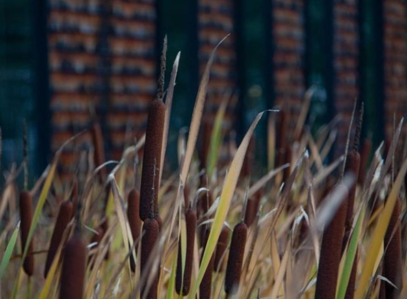

About me
Bildungsweg
Projekte
Kontakt
Herzlich Willkommen
Hi, ich bin Violetta Pyralov, studiere momentan Medieninformatik im zweiten Semester an der Hochschule in Furtwangen.
Meine Hobbies:
Zeichnen
Fotografieren
Schwimmen
Bildungsweg
Medieninformatik, Hochschule Furtwangen Bachelor of Science 2019 - heute
Allgemeine Hochschulreife, Berufliches Schulzentrum Waldkirch 2017 - 2019
Fachhochschulreife, Berufliches Schulzentrum Waldkirch 2015 - 2017
Mittlere Reife, Berufliches Schulzentrum Waldkirch 2013 - 2015
Hauptschulabschluss, Alemannen-Werkrealschule Denzlingen 2008 - 2013
HTML/CSS/JS
Wir haben im zweiten Semester einen eigenen Shop kreiert um HTML/CSS/JS zu lernen.
Shop Prototyp
Blender
Fotografie
